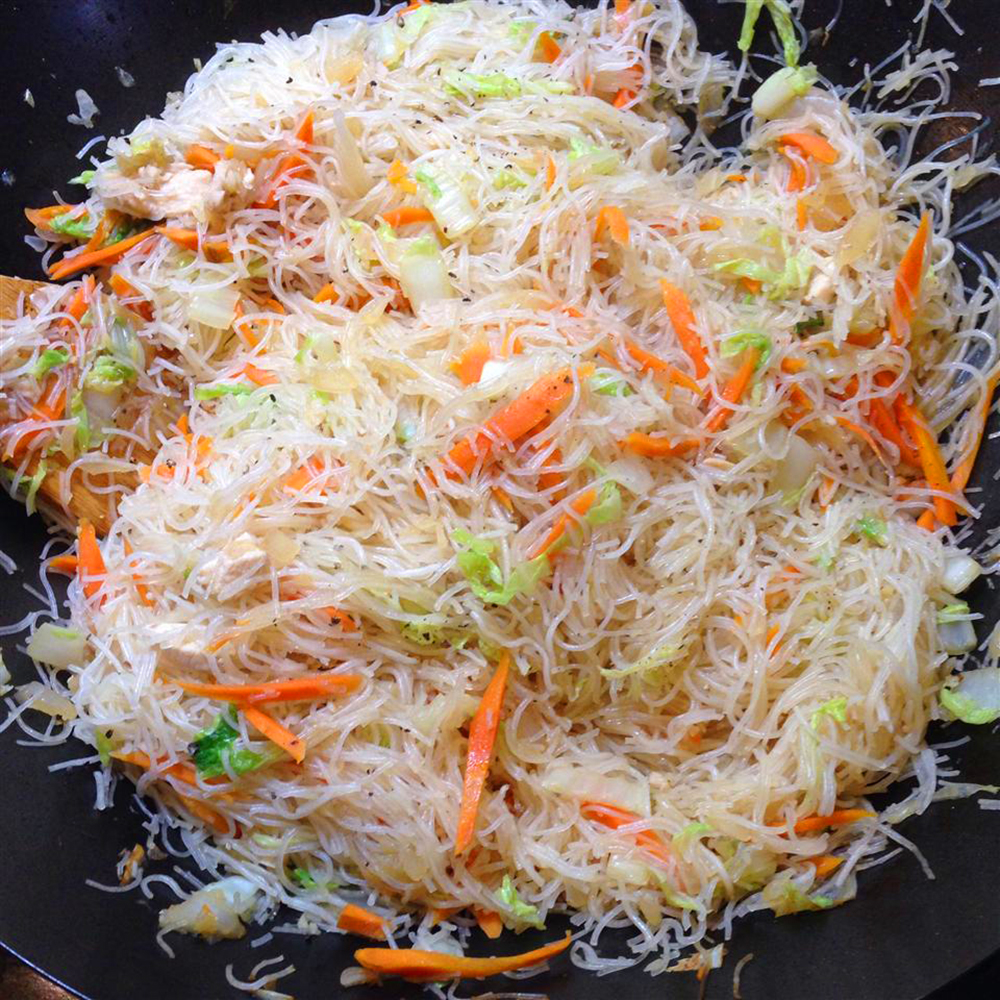

Pancit Bihon

Description:
Quick pancit recipe that's easy and delicious. This noodle dish will remind you of Island Fiestas!
Ingredients:
- 1 (12 ounce) package dried rice noodles
- 1 teaspoon vegetable oil
- 1 onion, finely diced
- 3 cloves garlic, minced
- 2 cups diced cooked chicken breast meat
- 1 small head cabbage, thinly sliced
- 4 carrot, thinly sliced
- ¼ cup soy sauce
- 2 lemons - cut into wedges, for garnish
Steps:
- Place rice noodles in a large bowl and cover with warm water. Let soften for 8 to 10 minutes. Drain and set aside.
- Heat oil in a wok or large skillet over medium heat. Sauté onion and garlic until soft. Stir in chicken, cabbage, carrots, and soy sauce. Cook until cabbage begins to soften. Toss in noodles and cook, stirring constantly, until heated through.
- Transfer pancit to a serving dish and garnish with quartered lemons.